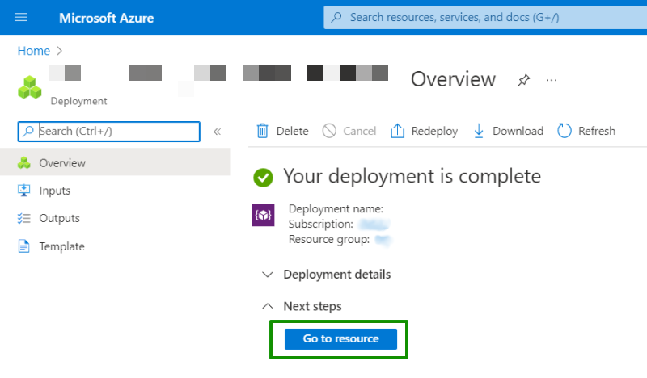
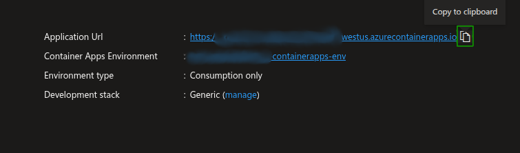
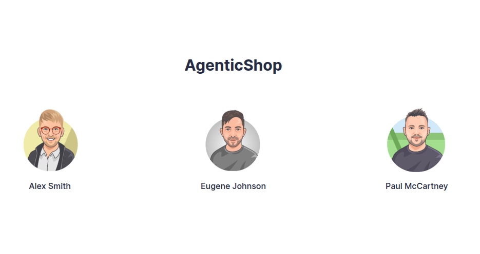

Deploy Apps on Azure¶
The workshop began with a development version of the AgenticShop application on your own computer. Now that you have modified elements of the app and tested them out locally, you might want to deploy the application on Azure.
Optional deployment on Azure
This step is optional and is not mandatory for the functioning of this solution accelerator. Using this step can help you experience the app functionality when its deployed in actual production environment on Azure infrastructure.
Because you used azd for provisioning and deployment, this is as simple as calling azd up (to push all changes in both infrastructure and application). After successful deployment on Azure Container Apps, running azd deploy would simply rebuild and deploy the application changes only you made in this project.
Understand the difference between azd up and azd deploy
The azd up and azd deploy commands are both part of the Azure Developer CLI, but they serve different purposes:
-
azd upis used to package, provision, and deploy your application to Azure. It sets up the entire environment, including infrastructure and application code, from scratch. It's typically used when you're starting a new project or making significant changes to your infrastructure. -
azd deployis used to update an existing deployment. It's helpful when making iterative changes to your application without needing to re-provision the entire environment. This command is ideal for continuous development and deployment scenarios where you frequently update your application.
In other words, use azd up when setting everything up from the beginning and azd deploy when updating an existing application deployment.
Deploy the Updated Apps¶
To deploy the updated app, follow the steps below:
-
Depending on the deployment option you selected previously, open the integrated terminal in Visual Studio Code for dev container option or
sh/pwshterminal for local dev environment option. -
Navigate to the root directory of your repository.
-
Execute this command to deploy your application with changes.
Execute the following Azure Developer CLI command!
1azd up -
When the
azdworkflow runs and select the same region and resource group that you created before. Theazdworkflow will ask you to enter the choice for the deployment of Azure Container Apps, enteryesto deploy updated apps on Azure Container Apps.1Do you want to deploy Azure Container Apps? (y/n): yes -
The terminal shows a link track the resources. You can click on the link to view resource creation on Azure portal. When the Azure services are deployed successfully, you shall see the following message:

-
At this point, the infrastructure has been provisioned and now your updated apps will be built and deployed to Azure Container Apps. This is the build and deploy phase or azd workflow.
-
On successful completion, you will see a
SUCCESS: Your application was deployed to Azure in xx minutes xx seconds.message on the console. -
Once the apps are deployed on Azure, you can use the following command to just build and redeploy the apps instead of provisioning complete infrastructure.
1azd deploy
Test the Deployed App¶
-
In the Azure portal, return to the resource group containing your resources and select the Container app resource.
-
In the Essentials section of the Portal Container App's Overview page, select the Application Url to open the deployed AgenticShop app in a new browser tab.

-
In the AgenticShop landing page, select any User and you can see the home page where all the products are listed!

-
You can select any product and the UI will show you the details and personalized recommendations of the products powered by AI models.
You made it! That was a lot to cover - but don't worry! Now that you have a fork of the repo, you can revisit ideas at your own pace! Before you go, there are some important cleanup tasks you need to do!!
THANK YOU: Let's wrap up the session by cleaning up resources!